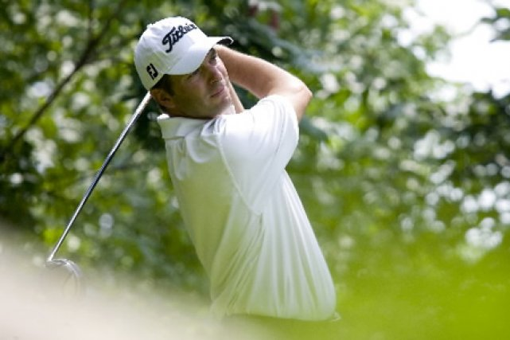

Martin Plante
Professionnel de classe A au sein de la CPGA et membre depuis 1989, le golf n'a plus beaucoup de secrets pour Martin Plante. Entant que professionnel-adjoint au Club de Golf Lorraine et Le Blanvillier, ainsi que professionnel-en-titre des Club de Golf Laval-sur-le-Lac et Le Challenger, Martin a su développer un talent certain pour l'enseignement du golf. Il est également un compétiteur né, ayant remporté le titre de Joueur de l'année sur le Circuit Honda en 2008, le gagnant du Skins Game Québécois en 2008 ainsi que le gagnant de la Classique Honda AGP 2006 et la Coupe Choisy en 2006 et 2007.
Jean Savard
Professionnel de golf depuis 30 ans et ancien hockeyeur hors-pair, Jean Savard est un passionné dans l'âme. Alors qu'il évoluait pour les Blackhawks de Chicago dans la LNH, Jean est devenu membre en règle de la PGA canadienne et québécoise en 1977. Après avoir conclu une belle carrière de hockey, il s'est rangé du côté de son amour du golf et fut Pro à La Seigneurie, l'Atlantide et Napierville. Depuis 2006, il occupe le poste de Directeur Général du Balmoral. Sa porte est toutefois toujours ouverte et il lui fera plaisir de vous conseiller, pour votre membership ou votre swing.

Venez rencontrer nos professionnels du golf. Ils se feront un plaisir de partager avec vous leur expérience et de vous guider vers les résultats escomptés.
Contactez-Nous
100, chemin Balmoral
Morin-Heights, J0R 1H0
(450) 226-5656